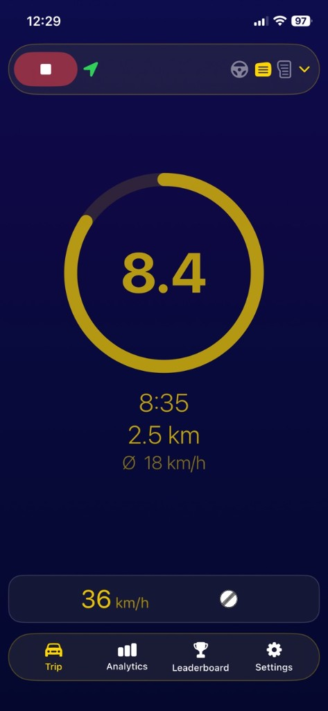
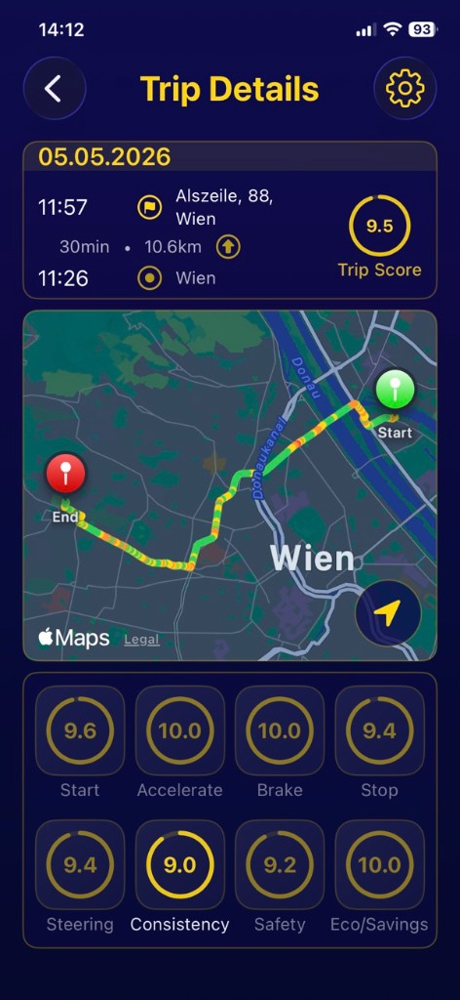

GoSmooth — The Driving App.
Kannst du gut Auto fahren?
Natürlich! Aber lass uns herausfinden, wie gut du wirklich bist. GoSmooth nutzt dein iPhone, um dein Fahrverhalten zu messen — sieh deinen Score während der Fahrt und vergleiche dich mit Freunden.

Die GPS-Daten und Bewegungssensoren deines iPhones werden kontinuierlich von der GoSmooth-KI analysiert. Jedes Manöver wird bewertet und daraus ein Gesamtscore berechnet – so erhältst du eine neutrale und objektive Einschätzung deiner Fahrleistung.

75 % aller Fahrer halten sich für überdurchschnittlich.
Mit GoSmooth findest du heraus, ob du wirklich gut Auto fährst – oder vielleicht sogar besser.
Erfahre mehr darüber, was GoSmooth kann, im Benutzerhandbuch, und lade die App hier.